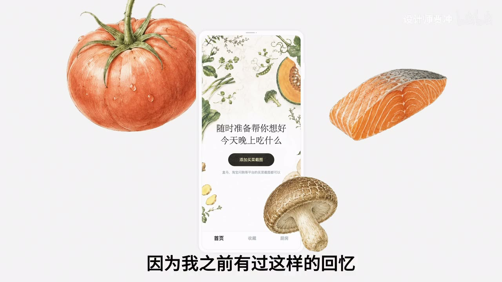
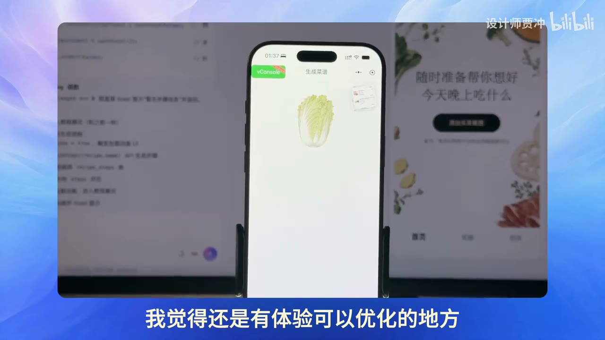

厨房里的一米距离，怎样变成产品设计
来源：设计师贾冲 · UX 作品集 AI 项目教程 · 13 分钟 · 快读。以视频中的做饭小程序为案例，不把演示项目写成读者自己的经历。
一句话抓住核心
从具体使用场景推导界面和流程，再用可操作的原型验证；AI 帮忙实现，产品判断仍需有依据。
一个真实的小麻烦，能拆出很多设计要求
做饭前看过教程，做到一半又忘了。手机放在厨房桌面上，离眼睛较远，还要反复找当前步骤。视频据此设计了上传买菜截图、生成菜品方案、逐步查看做法的流程。[00:01:45]
最有价值的细节是“阅读距离”：手机离眼睛约几十厘米到一米多，字号就要比普通近距离阅读更大；每一步单独占一屏，减少边做边找信息的负担。[00:02:45]
这是一条清楚的设计依据：场景约束 → 交互选择 → 可验证体验。它比“页面要高级”更容易指导实现。
先把页面之间的动作画出来
作者先写产品文档，再用纸笔画上传、确认、生成和教程等关键页面，说明点击后发生什么。线框图成为后续修改的参照。[00:03:40]
先用假数据跑通前端，可以检查是否容易理解、按钮能否完成预期操作。接入真实模型后，再检验识别与生成能力，避免把视觉问题和模型问题混在同一次排查里。[00:07:25]
风格可以来自任务本身
插画采用植物记录式的手作感，深色按钮借用黑芝麻糊的颗粒质感，都是围绕厨房场景做的选择。[00:05:25]

这些是设计探索，尚需可读性、对比度和用户反馈验证。独特纹理不应影响按钮识别，也不能因为有个人故事就推定体验更好。
等待画面也能传递有用信息
视频结尾反思加载动画：随机食材图标虽然好看，却与当前订单关系不大。如果展示刚识别到的食材，就能告诉用户系统看到了什么、正在处理什么。[00:12:00]

这个想法可以迁移到研究助手：等待时展示已确认的问题和找到的来源，帮助用户判断是否跑偏。进度应忠于真实状态，不能用动画伪造完成度。
降低输入负担，也要保留纠错入口
仅上传截图确实方便，但截图识别可能错，用户可能还有过敏、口味、份量或器具限制。因此可以让系统先提出方案，同时允许确认食材、修改条件和返回上一步。
这是本篇补充的产品检查。个人痛点可以作为起点，是否有更多用户愿意使用，还需要真实观察与试用，不能凭自身体验直接认定需求规模。
迁移练习：做一个“场景—决定—验证”表
选择你常用的搜索或学习页面，写三行：用户在什么条件下使用；因此需要什么设计；怎样观察它是否有效。
例如手机上读长笔记，可尝试更清楚的小标题和章节返回入口，再测试能否快速找到刚才那一段。保留修改前后截图和实际观察，得到一份真实的小型体验案例。